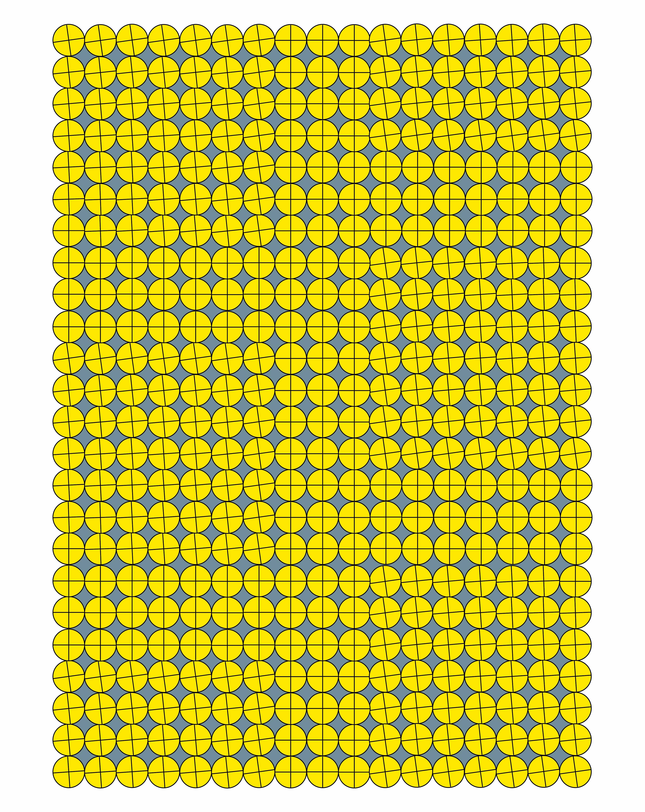
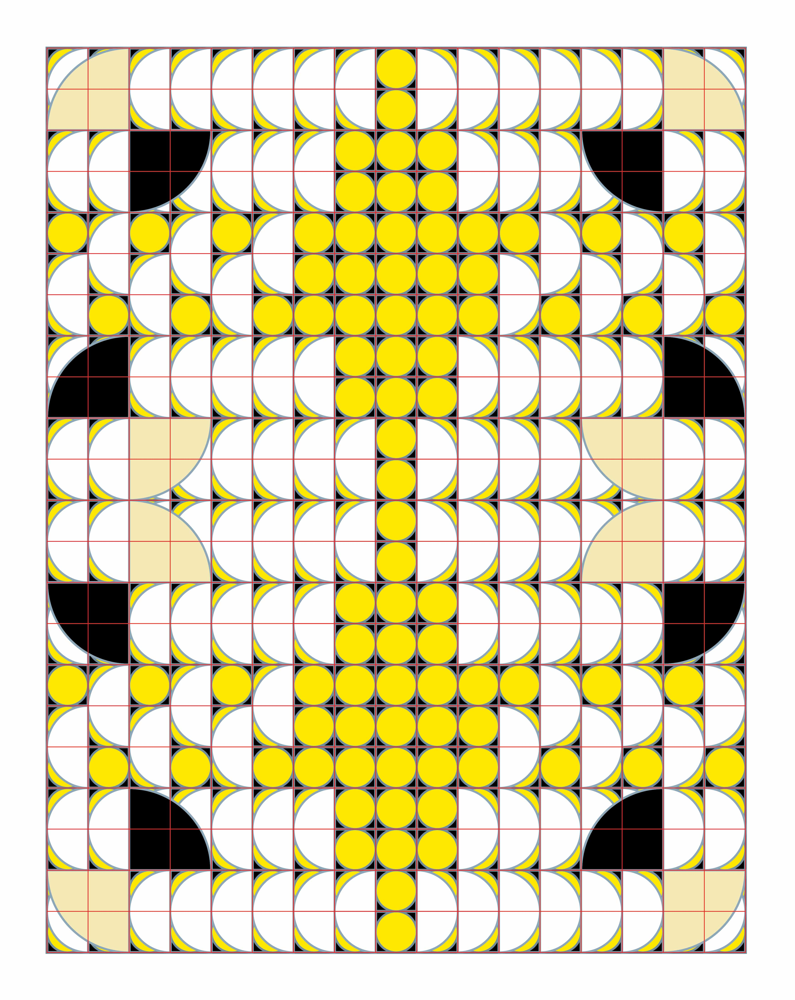
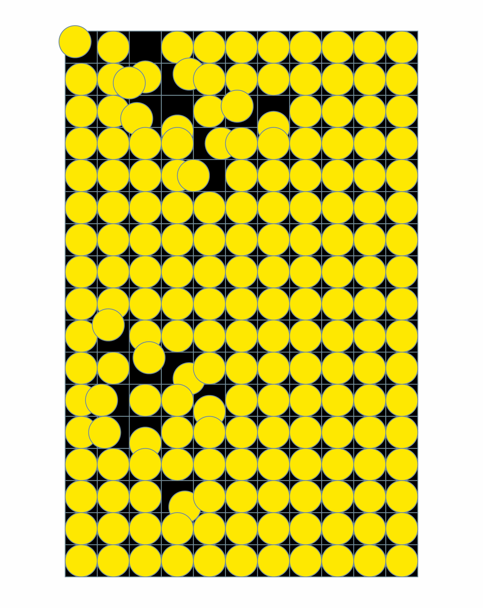

Abstract
This research investigates how pre-defined structures, particularly grids, shape the process of image making and the distribution of authorship. Drawing from my own studio practice—experiments with placing a single element, a circle, across different grid systems—and a workshop at KABK, I explore how working within constraints transforms creative decision-making. Grids, as pre-existing organisational structures, guide attention, introduce repetition and variation, and establish conditions under which images can emerge, shifting authorship from the sole hand of the maker to a relational process between system and gesture. Insights from Henri Jacobs and Marijn van Kreij, alongside theoretical perspectives from Roland Barthes and Hito Steyerl, situate this practice within a broader understanding of distributed authorship and infrastructural influence in both analogue and digital image making. Ultimately, this research demonstrates that structure is not merely a neutral tool, but an active participant, producing images through negotiation, response, and co-creation, and revealing how constraints and inherited systems generate variation, rhythm, and unforeseen outcomes.
Negotiation note 0
These notes will mark moments that share the conditions of making. They do not describe finished images, but reflect on the situations in which they emerge—how the surface is entered, how decisions unfold, and how structure is encountered.
Introduction
My first fascination with drawing was not really about what exactly I was drawing, but about the surfaces I was drawing on. As a child, I was always very attracted to notebooks with margins, squared paper, colouring books, and printed templates. I liked the feeling that something was already there before I started. The page was not empty, and I did not have to invent everything myself. I could enter a pre-defined structure, such as notebook or graph paper, and respond to it. Only much later did I realise that this attraction to pre-defined structures, such as grids, ruled pages, and printed templates, had stayed with me and gradually become central to the way I work.
In this text, I use the term structure to describe pre-existing organisational systems such as grids, printed formats, and other visual frameworks. While these forms differ in appearance, they share a common function: they organise the surface in advance and shape how the drawing can unfold.
Today, I notice that the moment I introduce a structure into my work, my behaviour changes: my hand slows down, my attention shifts from the whole image to small segments, and my decisions become more local and conditional. Instead of asking what I want the image to be, I start asking what is possible inside the structure in front of me. The grid does not simply organise the page; it actively guides where I look, where I hesitate, and where I continue.
This research grows directly out of this personal experience and my ongoing engagement with grid-based drawing. The process includes both my own studio practice—developed through repeated experiments with placing a single element within different grid structures—and a workshop in which I asked participants at KABK to work with grids as a starting point, alongside a set of additional conditions such as repetition and limitation of form.
Observing how different participants responded to the same underlying structure reinforced my interest in the relationship between structure, decision-making, and authorship. Some treated the grid as a strict set of rules, while others used it more loosely as a guide, resulting in varied approaches to alignment, repetition, and deviation.
Through this research, I became particularly interested in what happens when I deliberately give part of my control to a pre-defined structure—a surface I have chosen beforehand—and how this changes my role as a maker. I explore this by repeatedly placing the same visual element, a circle, into different grid structures, allowing drawing to become a process of negotiation rather than free composition. In each drawing, the circle is reworked according to the logic of the grid it enters, often derived from graph paper, notebooks, or other pre-printed formats. Sometimes it is repeated within each cell, sometimes stretched across divisions, and sometimes adapted to irregular structures. Through these procedures, the element is continuously reshaped by the logic of the grid, while my authorship shifts between inventing form and responding to constraints.
I chose to work with a circle because it is a simple and neutral form that does not carry a strong predefined meaning. Its clarity allows the focus to shift away from the element itself and toward the structure in which it is placed. At the same time, the circle is a continuous and closed shape, with no beginning, end, or corners, which has led it to be widely associated with ideas of wholeness, unity, and perfection (REF). This underlying sense of completeness contrasts with the rigid divisions of the grid, making the circle particularly reactive to the structure it enters. Within this tension, it can be repeated, stretched, or interrupted by the system, allowing its apparent neutrality to be tested and redefined through each configuration.

Negotiation note 1
When entering a page, I feel as though I am entering a new environment. How do I respect its rules, its natural order, its pre-made decisions? I am aware that the page is not neutral: its edges, its proportions, and its grid already propose ways of moving, pausing, and occupying space. I do not arrive as a free agent, but as a visitor negotiating with an existing structure.
Note 1,
This raises a central question for my research: how does a pre-existing organisational system influence the act of drawing and the role of the maker within it?
Entering a surface that is already organised
Entering a surface that is already organised
Entering a surface that is already organised
Throughout the history of image-making, the grid has functioned as a fundamental organisational device¹. It operates across many different contexts: as a method for transferring images from one surface to another, as a compositional aid in drawing and painting, as a structural system in graphic design and architecture, and as a conceptual framework in modern and contemporary art (REF).
It is also present in everyday formats such as notebooks, graph paper, ruled writing paper, dotted journals, and mathematical or architectural drawing sheets. In its most basic form, a grid divides a surface into equal segments, creating a network of horizontal and vertical lines that organise space before any image or content appears. Because of this, the grid does not simply structure the surface visually; it establishes a system of orientation, measurement, and order REF.
These everyday Everyday grid formats such as notebooks, graph paper, ruled or dotted journals, and architectural or mathematical drawing sheetsare not neutral supports but pre-structured environments designed to organise writing, calculation, measurement, or planning REF. expand. Historically, the grid has often been treated as a practical tool that assists the artist in achieving accuracy or proportion. It can help enlarge or reduce an image, maintain perspective, or distribute visual elements across a surface. In many cases it disappears once the image is completed, functioning as an invisible support structure beneath the final composition. Yet even when it remains hidden, the grid plays a decisive role in shaping how the image is constructed. By dividing the surface into smaller units, it introduces a logic of segmentation and repetition that can guide both perception and action.
The grid has also played a central role in design. In graphic design, editorial layouts, typography, and architectural planning, grids act as practical frameworks for organising content, balancing proportions, and guiding the viewer’s attention. Unlike in art, where the grid often disappears behind expressive marks, in design it is often deliberately maintained as a visible structure that orders information and shapes perception. Recognising this dual role; as both a conceptual and functional system—situates my practice within a field where structure is not only a visual device but also a tool for navigating and controlling space.
When a grid is placed onto a blank page, image-making no longer begins from an empty field, but from an already organised situation in which divisions, intervals, and directions are present before the first mark is made. This shift in behaviour is the starting point of my research. I am interested in what happens when the grid is no longer treated as a neutral background tool, but acknowledged as an active participant in the drawing process. I do not use the grid to improve composition or accuracy. Instead, I use it to make visible how much of image-making is, or can be, shaped by pre-existing organisational frameworks.
I primarily work with these kinds of pre-printed papers, allowing their systems of lines, dots, and divisions to shape how the drawing begins and develops. This introduces a subtle shift: the grids printed on these papers were originally intended to guide specific activities such as note-taking, calculation, or drafting. By using them for image making, I place visual elements—such as circles—into spaces that were not designed for expressive mark-making. I stretch, repeat, or adapt forms across divisions, sometimes ignoring or bending the original constraints. In doing so, the grid becomes less a tool for functional organisation and more a framework for exploring variation, repetition, and negotiation between form and structure.
In working with the pages in a different way than intended, what interests me is that the grid still carries traces of its original logic—its regular intervals, consistent proportions, and directional cues continue to influence how marks are placed and how elements relate to one another—creating a tension between the structure’s practical purpose and its new role as a visual structure.
Distributed Authorship
Working in this way—placing visual elements into a pre-defined grid—has reshaped how I understand authorship in my practice. Rather than being the sole origin of the image, I work in relation to the surface: the grid pre-organizes the page, establishing divisions, proportions, and intervals that guide marks. Each image emerges through a negotiation between my hand and this structure. By repeating, stretching, or adapting a simple form, such as a circle, I respond to the system while introducing subtle variations. The grid is not entirely fixed; the same underlying structure can produce different outcomes depending on how I engage with it. In this sense, I become a co-author: authorship is shared between the grid and my actions. The work, its rhythm, repetitions, and variations, reveals this distributed process, where the grid shapes possibilities as much as my hand shapes the image.
This shift in how authorship operates within my work resonates strongly with the ideas introduced in The Death of the Author by French philosopher Roland Barthes (REF). In the essay, Barthes argues that authorship is not fixed or singular, but unstable, offering a useful lens for understanding what happens when creative decisions are shared with systems or structures. He challenges the traditional view that a work should be understood as the direct expression of a single authorial voice, proposing instead that a text is produced through a variety of influences, references, and structures that extend beyond the intentions of its maker.
Barthes describes writing as “a multi-dimensional space in which a variety of writings, none of them original, blend and clash,” (Footnote 4) a space in which meaning does not originate from a single author but emerges through the interaction of multiple voices, references, and structures within the text itself. For Barthes, rather than originating entirely from a single individual, meaning emerges through the interaction of different elements within the work itself. In this way, The figure of the author, which has traditionally functioned as the central authority behind a work, becomes less stable. Barthes famously formulates this shift in the statement that “the birth of the reader must be at the cost of the death of the Author.” REF By this he does not mean that the author literally disappears, but that the authority traditionally attributed to the author should no longer determine how a work is understood. Meaning is instead produced through the relationships that unfold within the work and through the engagement of the viewer or reader.
When moving these ideas in relation to my image making practice within the system of a grid, this redistribution of authorship becomes tangible through the presence of the grid. The grid pre-organises the surface before the image begins, establishing divisions, proportions, and directional rhythms that co-compose how the image can develop. Each mark is made in relation to this existing structure rather than emerging from an entirely autonomous decision. Drawing therefore unfolds less as the execution of a predetermined idea and more as a negotiation with constraints. The grid does not dictate the final image, but it shapes the conditions under which the image can appear; guiding where attention moves, where lines continue or stop, and how different parts of the surface relate to one another.
Authorship in the drawing becomes distributed between gesture and system. My role as maker shifts from sole origin to working within a framework that actively shapes the work. The grid is not a neutral support but an organising structure that guides decisions and redistributes creative agency. For example, placing a circle on graph or dotted paper, it may stretch across cells, repeat, or adapt to irregular divisions. Each variation emerges from the dialogue between my hand and the grid, where structure sets possibilities and limits, and my responses introduce subtle shifts, deviations, and rhythms. The drawings make this negotiation visible, showing how outcome and authorship unfold across both system and gesture.

Negotiation note 2
Grid,
At what point does following the grid become a form of listening rather than obedience?
Sometimes I begin by treating the grid as a strict instruction. I follow its divisions carefully, almost mechanically. But after a while something shifts. The structure stops feeling like a restriction and begins to function more like a guide. Instead of resisting it, I start to read it. The grid begins to suggest possibilities I would not have invented on my own.
The grid as infrastructure
The grid as infrastructure
The grid as infrastructure
When image-making is understood as a negotiation with structure, it becomes possible to see images not simply as isolated objects but as products of the systems that organize them. Images rarely emerge from a neutral environment; they are shaped by pre-existing structures that define how marks can be made and how they are encountered. These structures often remain invisible, yet they strongly influence both the act of making and the ways images are perceived.
In contemporary visual culture, the structuring role of systems is particularly visible in digital media. Platforms, file formats, algorithms, and institutions continuously shape how images are stored, circulated, and viewed, influencing their visibility and meaning. German filmmaker and artist Hito Steyerl highlights this in Duty Free Art (REF), showing how images “circulate, transform, accelerate and degenerate” within infrastructures. These insights offer a useful lens for thinking about analogue drawing: just as digital systems guide how images appear and move, pre-existing structures such as grids guide how marks can be made, creating a negotiated relationship between hand, form, and framework.
Through Duty Free Art, Steyerl argues that images today exist within complex economic, technical, and institutional systems that shape how they move through the world. Rather than existing as stable, self-contained objects, images circulate through networks of platforms, archives, compression formats, and distribution channels. As they travel, they are continually reformatted, copied, and transformed. As Steyerl writes, images “circulate, transform, accelerate and degenerate” (Footnote 3) as they pass through these infrastructures. She is writing in relation to the ways digital and institutional systems actively determine what images can appear, how they are viewed, and how they gain meaning. For example, a news photograph may be cropped for social media, compressed for faster loading, or paired with metadata that guides interpretation, while stock images or memes are often modified and redistributed according to technical or cultural conventions.
For Steyerl, this constant movement fundamentally changes what an image is. It is no longer defined solely by its visual content, but also by the systems that allow it to appear, travel, and be seen. Circulation becomes part of the image itself: the pathways, transformations, and formats an image passes through shape its meaning. She further describes the contemporary image as “a copy in motion,” emphasising how reproduction, mobility, and mediation are central to its existence. Images operate less as fixed representations and more as elements within dynamic networks. Similarly, in analogue drawing, pre-existing structures such as grids actively condition how images emerge, shaping how marks are made, organised, and perceived.
Although my works are slow and analogue, I recognise a similar logic operating on a smaller and more personal scale. In my practice, the grid functions as a local infrastructure. Before any mark is made, it organises the surface of the page by establishing divisions, directions, and intervals that influence how the drawing can unfold. The grid therefore operates not simply as a compositional aid but as a structuring system that produces its own order and limits for action.
Thinking of the grid as infrastructure shifts how its role in the drawing process can be understood. Rather than serving only as a tool used by the artist, it becomes a system that conditions behaviour. It guides how attention moves across the surface and how different parts of the drawing relate to one another, so that decisions take place not within an open field but within a spatial framework that already directs movement and perception.
Gender bias in heart disease is an issue that strongly highlights the inequalities in medical research and care. The leading cause of death among womxn in The Netherlands, as well as the United States, is cardiovascular disease.▶︎23 ㉓Vrouwenhart. (2022, June 3). HartKliniek. https://www.hartkliniek.com/zorgaanbod/vrouwenhartDue to a lack of sex-specific research and awareness womxn are often misdiagnosed or experience delayed diagnoses. For example, within five years of a first heart attack, 47% of women die in comparison to 36% of men. Moreover, womxn very often receive wrong diagnoses such as asthma, anxiety or menopause, because womxn report years of ‘normal’ results or are being told that their symptoms are ‘all in their head’.▶︎24㉔M Johnson, H., & E Gorre, C. (2021). Addressing the Bias in Cardiovascular Care: Missed & Delayed Diagnosis of Cardiovascular Disease in Women. In National Library of Medicine. National Institutes of Health. https://pmc.ncbi.nlm.nih.gov/articles/PMC8666638/ The consequences of the bias are significant, which emphasizes the need for sex-specific research, as it can mean the difference between life and death.
Since the 1990s, the design of the pill has gone largely unchanged. The most notable shift is that more attention has gone to incorporating memory aids. The pills now come in a more structured pill strip with directional arrows and days of the week
FIG 7
 Birth control pill strip
Birth control pill strip
The importance of more research also applies to the hormonal contraceptives, where gaps in knowledge remain. Over the years, research was mostly focused on safety and efficiency. There has gone much attention to effects like blood clots, strokes, etc. This provided womxn a sense of safety while using them, which is very important. However, up until very recently little research has been done on the effects of birth control on the brain. This means there are almost no insights into what it does to a person. Effects like social interactions, attention, learning and memory. But also, the non-brain part of the body like the immune system, the stress response and womxn’s gut hormones.▶︎25㉕Hill, Sarah E. This Is Your Brain on Birth Control: How the Pill Changes Everything. Avery, 2019, p. 90 When these impacts are not researched womxn will stay unaware of the full range of potential effects.
The overall gap in medical research causes womxn to very often be misunderstood, mistreated and misdiagnosed.▶︎26 ㉖Criado Perez, Caroline. Invisible Women: Exposing Data Bias in a World Designed for Men, 2019, p.196It leaves not only womxn but also often doctors short on information. The lack of knowledge about the female body has fostered an environment where the introduction of hormonal contraceptives has gone largely unquestioned, and the impacts and experiences of womxn’s using these products are still overlooked today. Researcher Sarah Hill states in her book This Is Your Brain on Birth Control “When more females are studied, female specific health issues including the birth control pill will also be studied.”▶︎27 ㉗ Hill, Sarah E. This Is Your Brain on Birth Control: How the Pill Changes Everything. Avery, 2019, p. 226It is time for the medical world to prioritize research on womxn’s health.

Thought 3
Grid,
I hear others talk about you.
Some praise you, some resent you.
When I voice my doubts about you, most womxn can relate. Other people don’t understand me or don’t want to listen. I am told to be patient and appreciate what you offer me. They say my bad experiences with you are normal. That I should just deal with the consequences.
There is an expectation that I will accept you without complaint. When I question our relationship, people assume that I will totally reject you.
Maybe we’re just not made for each other. Maybe I expected you to be better.
I wonder, am I allowed to be unhappy with you? Am I allowed to demand something different, something better?
Epilogue
Through this research, I have come to understand image making not as the execution of a preconceived image, but as a negotiation between hand, form, and structure. By working within pre-defined grids, I encounter a system that guides attention, introduces constraints, and shapes possibilities, while leaving space for subtle interventions, deviations, and variation. The grid is not a neutral support but an active participant, redistributing authorship and co-creating the image alongside me. In this sense, making becomes a dialogue between intention and framework, gesture and system.
Engaging with the practices of Henri Jacobs and Marijn van Kreij, as well as with theoretical perspectives such as Barthes’ distributed authorship and Steyerl’s infrastructures of images, has helped situate my work within a broader understanding of how structures shape creativity. Whether in analogue image making or digital circulation, the systems that organise a page or an image are never neutral—they frame what is possible, direct perception, and influence outcomes. Recognising this allows authorship to be seen as relational and negotiated rather than fixed and singular.
Ultimately, my work with circles and grids demonstrates that creative agency can emerge not despite structure, but through it. The act of image making becomes a process of attentively reading, responding to, and coexisting with the systems that precede it. This approach opens a space where repetition, variation, and constraint are generative, revealing how images—and the roles of those who make them—are always embedded in conditions larger than themselves.
Negotiation note 4
Grid,
I don’t know whether we should continue our relationship. Maybe I should take a break from you. To get to know myself without you.
That doesn’t mean you aren’t right for someone else. But maybe you were never meant for me. I expected more or just need something else to comfort me.
I hope you can become a better or different version of yourself, one that brings me more certainty than questions.
I wish to talk about my experiences more, because I cannot ignore my doubts and don’t want to silence my thoughts.
Bibliography
Rosalind Krauss, “Grids,” October 9 (Summer 1979): 50–64; Josef Müller-Brockmann, Grid Systems in Graphic Design (Zurich: Niggli, 1981); “Grids and Squared Paper in Renaissance Architecture,” Drawing Matter.
Van Gaalen, E. “Jongeren Hebben Vaker Onbeschermde Seks: Pil En Condoom Raken Verder Uit De Gratie.” Het Parool,22 Jan. 2024, parool.nl/nederland/jongeren-hebben-vaker-onbeschermde-seks-pil-en-condoom-raken-verder-uit-de-gratie-b30f5f4d/.
Typefaces in use:
CirrusCumulus, by Clara Sambot. Distributed by velvetyne.fr.
Inter, by Rasmus Andersson. Distributed by Google Fonts.
Contact
Acknowledgements
This research document would not have been possible without the guidance of Barbara Neves Alves. Thank you for your invaluable feedback, knowledge, and expertise.
I would also like to extend my sincere thanks to my coding tutors, François Girard-Meunier, Thomas Buxo and Pascal de Man, for their support in developing and refining the thesis website.
My gratitude goes as well to Marijn van Kreij and Henri Jacobs, who generously shared their time and insights during our conversations.
I am especially thankful to my parents for their unwavering support and for always keeping me grounded.